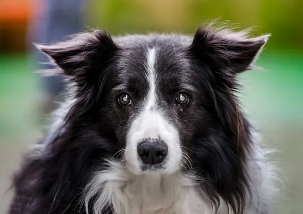

Adotar um cachorro é um gesto de amor e responsabilidade que transforma vidas — tanto a dele quanto a sua. Quando você adota, dá uma segunda chance para um animal que muitas vezes já sofreu abandono ou maus-tratos, oferecendo um lar cheio de carinho e segurança. Além disso, os cães trazem alegria.
Adote amor, adote vida.



a